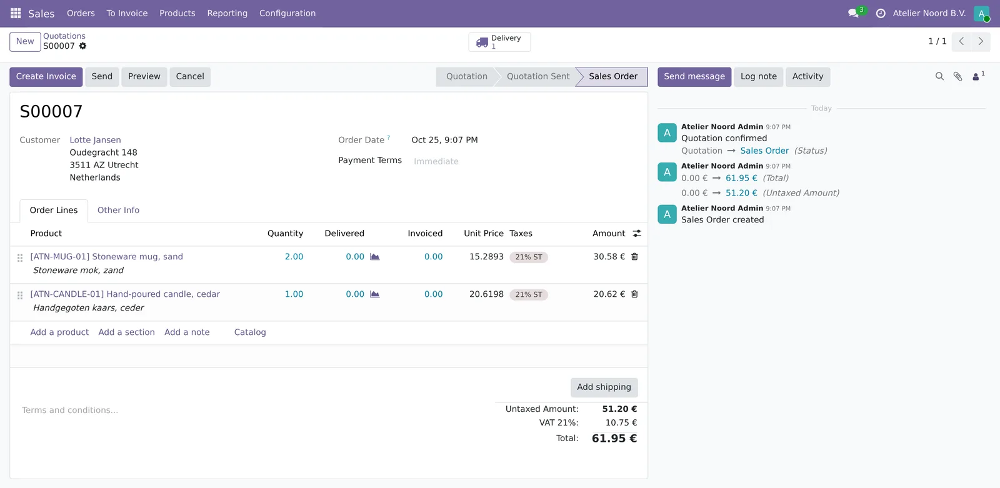
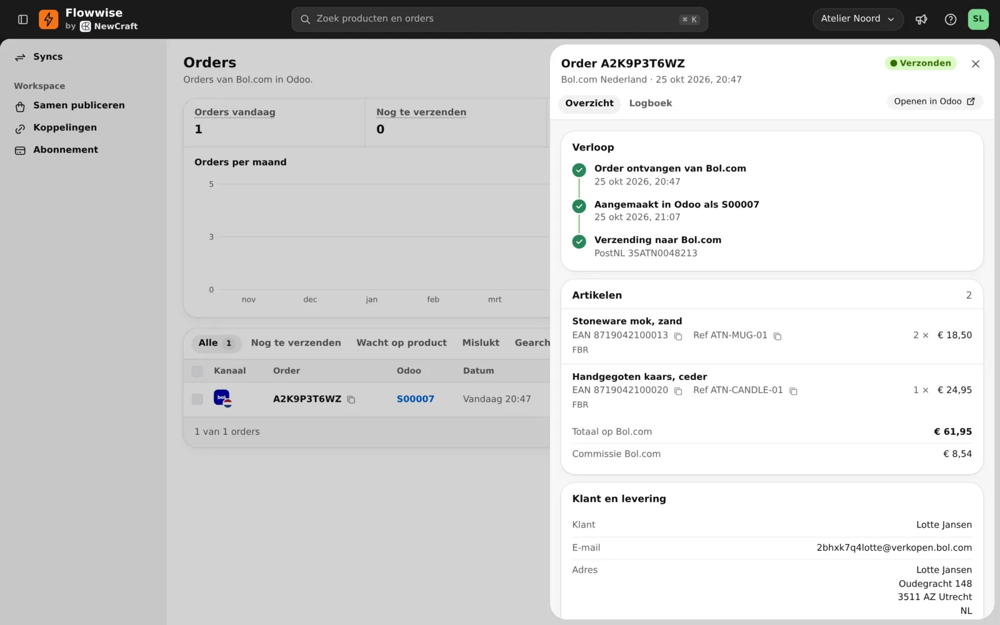
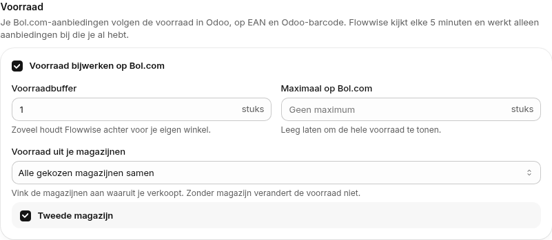

Stock, price and delivery time each have their own switch. Flowwise updates the offers you already have on bol.com and creates no new ones.

Send orders to Odoo as soon as Flowwise fetches them, or check them first and send them yourself. An order with a product Odoo doesn't have waits until you add it, so your stock moves stay correct.
Does bol.com cancel a whole order? Switch it on and Flowwise cancels the sales order in Odoo. A delivered or invoiced order stays put, and Flowwise shows it to you.
Sell on Kaufland too? Connect it as a second sync and those orders reach Odoo the same way.

The module only adds the Flowwise menu item. Flowwise does its work through Odoo's API, so nothing else runs inside your Odoo.
Questions? Email flowwise@newcraft.dev or read more at flowwise.dev.